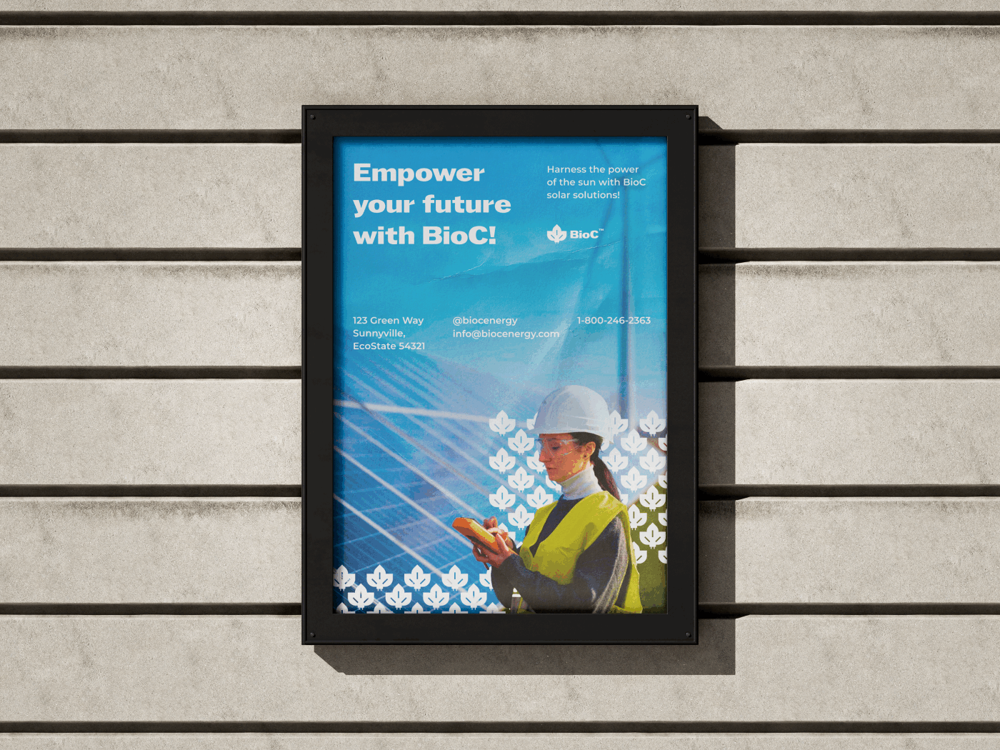

Selected project 09
BioC.
An exploratory identity concept focused on visual direction.
- Role
- Brand designer
- Period
- —
- Scope
- Identity and communication
- System
- Focused case study

(A) — Identity
A concept identity visible from the boardroom to the field.
The scope
Concept identity and visual direction.
The challenge
The concept needed to connect corporate credibility with the physical and operational scale of an energy company.
My contribution
I explored an ownable symbol, direct typography and a focused blue palette across stationery, social media, equipment, containers and outdoor communication.
01
One identity across corporate and operational settings.
Visual exploration
The project tests whether the same compact visual idea remains recognizable across small corporate materials and large physical infrastructure.
(B) — Outcome
A focused identity tested from corporate materials to physical infrastructure.
- Created a compact visual idea for corporate and operational settings.
- Tested recognition across stationery, social media, equipment, containers and outdoor communication.
- Built a concept foundation that can expand into future brand and campaign work.